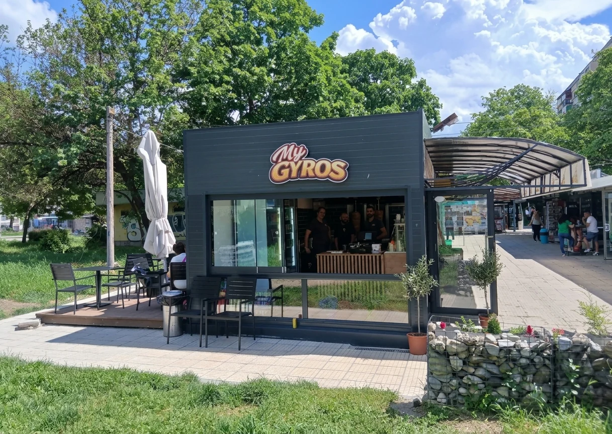
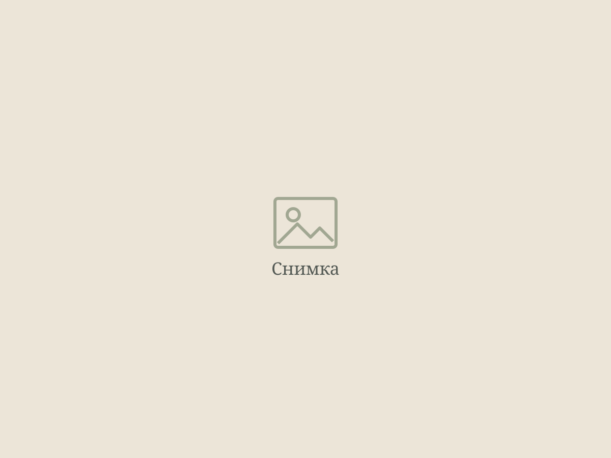

My Gyros · ул. „Солунска“ 6, Пловдив
Истинският вкус на Гърция в Пловдив.
Свинско месо, внесено от Гърция, приготвено по традиционна рецепта. Вземи за вкъщи или поръчай с доставка.
4,8За нас
Гирос, направен така, както се прави в Гърция.
Намираме се на ул. „Солунска“ 6, в ж.к. „Христо Смирненски“. Работим със свинско месо, внесено от Гърция, и го приготвяме по традиционна рецепта.
Всичко се прави на момента, за да стигне до теб прясно и топло. Мини да си вземеш или поръчай с доставка до вкъщи.
„Вкусен гирос, прясно месо и много любезен персонал! На квартала му трябваше такова заведение.“
Галерия
Мястото и храната.

„Много вкусно! Пилето беше много вкусно и сочно, а бургерът — един от най-добрите, които съм пробвала. Всичко беше прясно, топло и направено както трябва. Определено ще поръчам отново!“
„Вкусен гирос, прясно месо и много любезен персонал! На квартала му трябваше такова заведение, продължавайте в същия дух!!!“
Поръчка
Гладен? Поръчай сега.
Обади се и вземи гироса си топъл от обекта или го поръчай с доставка до вкъщи.
Контакти
Намерете ни
- Адрес
- ул. „Солунска“ 6 ж.к. „Христо Смирненски“ 4001 Пловдив Район Западен
- Телефон
- 088 510 0225
- Работно време
- Всеки ден: 10:00 – 23:00